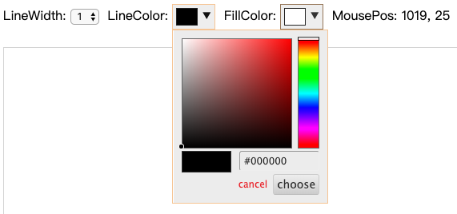
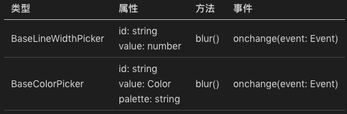
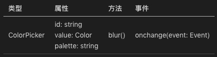
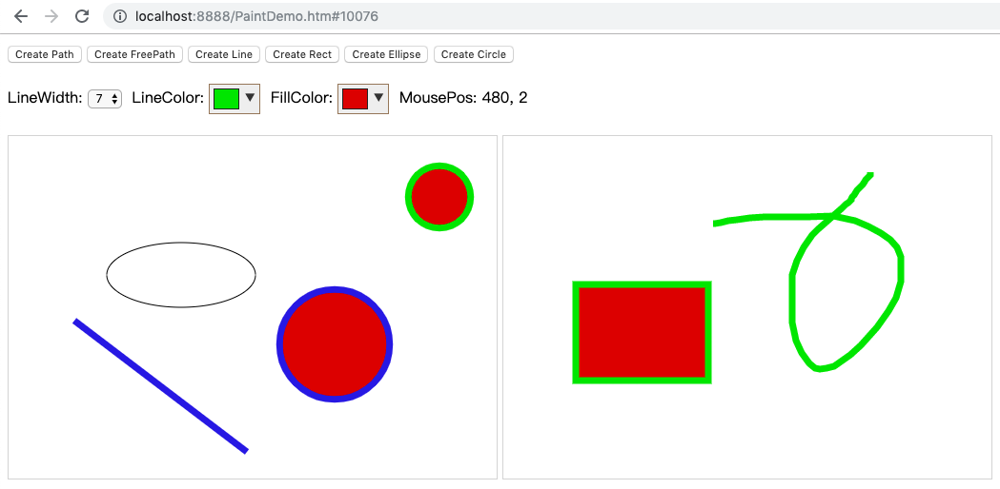

- 00 开篇词 怎样成长为优秀的软件架构师？.md
- 01 架构设计的宏观视角.md
- 02 大厦基石：无生有，有生万物.md
- 03 汇编：编程语言的诞生.md
- 04 编程语言的进化.md
- 05 思考题解读：如何实现可自我迭代的计算机？.md
- 06 操作系统进场.md
- 07 软件运行机制及内存管理.md
- 08 操作系统内核与编程接口.md
- 09 外存管理与文件系统.md
- 10 输入和输出设备：交互的演进.md
- 11 多任务：进程、线程与协程.md
- 12 进程内协同：同步、互斥与通讯.md
- 13 进程间的同步互斥、资源共享与通讯.md
- 14 IP 网络：连接世界的桥梁.md
- 15 可编程的互联网世界.md
- 16 安全管理：数字世界的守护.md
- 17 架构：需求分析 (上).md
- 18 架构：需求分析 (下) · 实战案例.md
- 19 基础平台篇：回顾与总结.md
- 20 桌面开发的宏观视角.md
- 21 图形界面程序的框架.md
- 22 桌面程序的架构建议.md
- 23 Web开发：浏览器、小程序与PWA.md
- 24 跨平台与 Web 开发的建议.md
- 25 桌面开发的未来.md
- 26 实战（一）：怎么设计一个“画图”程序？.md
- 27 实战（二）：怎么设计一个“画图”程序？.md
- 28 实战（三）：怎么设计一个“画图”程序？.md
- 29 实战（四）：怎么设计一个“画图”程序？.md
- 30 实战（五）：怎么设计一个“画图”程序？.md
- 31 辅助界面元素的架构设计.md
- 32 架构：系统的概要设计.md
- 33 桌面开发篇：回顾与总结.md
- 34 服务端开发的宏观视角.md
- 35 流量调度与负载均衡.md
- 36 业务状态与存储中间件.md
- 37 键值存储与数据库.md
- 38 文件系统与对象存储.md
- 39 存储与缓存.md
- 40 服务端的业务架构建议.md
- 41 实战（一）：“画图”程序后端实战.md
- 42 实战（二）：“画图”程序后端实战.md
- 43 实战（三）：“画图”程序后端实战.md
- 44 实战（四）：“画图”程序后端实战.md
- 45 架构：怎么做详细设计？.md
- 46 服务端开发篇：回顾与总结.md
- 47 服务治理的宏观视角.md
- 48 事务与工程：什么是工程师思维？.md
- 49 发布、升级与版本管理.md
- 50 日志、监控与报警.md
- 51 故障域与故障预案.md
- 52 故障排查与根因分析.md
- 53 过载保护与容量规划.md
- 54 业务的可支持性与持续运营.md
- 55 云计算、容器革命与服务端的未来.md
- 56 服务治理篇：回顾与总结.md
- 57 心性：架构师的修炼之道.md
- 58 如何判断架构设计的优劣？.md
- 59 少谈点框架，多谈点业务.md
- 60 架构分解：边界，不断重新审视边界.md
- 61 全局性功能的架构设计.md
- 62 重新认识开闭原则 (OCP).md
- 63 接口设计的准则.md
- 64 不断完善的架构范式.md
- 65 架构范式：文本处理.md
- 66 架构老化与重构.md
- 67 架构思维篇：回顾与总结.md
- 68 软件工程的宏观视角.md
- 69 团队的共识管理.md
- 70 怎么写设计文档？.md
- 71 如何阅读别人的代码？.md
- 72 发布单元与版本管理.md
- 73 软件质量管理：单元测试、持续构建与发布.md
- 74 开源、云服务与外包管理.md
- 75 软件版本迭代的规划.md
- 76 软件工程的未来.md
- 77 软件工程篇：回顾与总结.md
- 加餐 如何做HTTP服务的测试？.md
- 加餐 实战：“画图程序” 的整体架构.md
- 加餐 怎么保障发布的效率与质量？.md
- 热点观察 我看Facebook发币（上）：区块链、比特币与Libra币.md
- 热点观察 我看Facebook发币（下）：深入浅出理解 Libra 币.md
- 用户故事 站在更高的视角看架构.md
- 答疑解惑 想当架构师，我需要成为“全才”吗？.md
- 结束语 放下技术人的身段，用极限思维提升架构能力.md
- 课外阅读 从《孙子兵法》看底层的自然法则.md
31 辅助界面元素的架构设计
你好，我是七牛云许式伟。
我们第二章 “桌面软件开发” 今天开始进入尾声。前面我们主要围绕一个完整的桌面应用程序，从单机到 B/S 结构，我们的系统架构应该如何考虑。并且，我们通过五讲的 “画图” 程序实战，来验证我们的架构设计思路。
这个实战有点复杂。对于编码量不多的初学者，理解起来还是有点复杂性的。为了减轻理解的难度，我们从原计划的上下两讲，扩大到了五讲。尽管如此，理解上的难度仍然还是有的，后面我们做总结时，会给出一个不基于 MVC 架构的实现代码。
今天我们不谈桌面应用的架构，而是来谈谈辅助界面元素的架构设计。
辅助界面元素非常常见，它其实就是通用控件，或者我们自定义的控件。例如在我们画图程序中使用了线型选择控件（menu.js#L105），如下：
<select id="lineWidth" onchange="onIntPropChanged('lineWidth')">
<option value="1">1</option>
<option value="3">3</option>
<option value="5">5</option>
<option value="7">7</option>
<option value="9">9</option>
<option value="11">11</option>
</select>
还有颜色选择控件（menu.js#L115），如下：
<select id="lineColor" onchange="onPropChanged('lineColor')">
<option value="black">black</option>
<option value="red">red</option>
<option value="blue">blue</option>
<option value="green">green</option>
<option value="yellow">yellow</option>
<option value="gray">gray</option>
</select>
<select id="fillColor" onchange="onPropChanged('fillColor')">
<option value="white">white</option>
<option value="null">transparent</option>
<option value="black">black</option>
<option value="red">red</option>
<option value="blue">blue</option>
<option value="green">green</option>
<option value="yellow">yellow</option>
<option value="gray">gray</option>
</select>
我们统一用通用的 select 控件实现了一个线型选择器、两个颜色选择器的实例。虽然这种方式实现的颜色选择器不够美观，但是它们的确可以正常工作。
不过，产品经理很快就提出反对意见，说我们需要更加用户友好的界面。赶紧换一个更加可视化的颜色选择器吧？比如像下图这样的：

辅助界面元素的框架
怎么做到？
我们不妨把上面基础版本的线型选择器、颜色选择器叫做 BaseLineWidthPicker、BaseColorPicker，我们总结它们在画图程序中的使用接口如下：

我们解释一下这个表格中的各项内容。
id 是控件的 id，通过它可以获取到辅助界面元素的顶层结点。
value 是界面元素的值，其实也就是辅助界面元素的 Model 层的数据。从 MVC 架构角度来说，Model 层的数据一般是一棵 DOM 树。但是对很多辅助界面元素来说，它的 DOM 树比较简单，只是一个数值。比如线型选择器是一个 number，颜色选择器是一个 Color 值。
palette 是颜色选择器的调色板，用来指示颜色选择器可以选择哪些颜色。
blur() 方法是主动让一个界面元素失去焦点。
onchange 事件是在该界面元素的值（value）通过用户界面交互进行改变时发送的事件。需要注意的是，这个事件只在用户交互时发送。直接调用 element.value = xxx 这样的方式来修改界面元素的值是不会触发 onchange 事件的。
为了便于修改辅助界面元素，我们计划引入统一的辅助界面元素的框架。
这个框架长什么样？
首先，每个界面元素使用的时候，统一以 <div type="xxx">来表示。比如上面的一个线型选择器、两个颜色选择器的实例可以这样来表示：
<div type="BaseLineWidthPicker" id="lineWidth" onchange="onIntPropChanged('lineWidth')"></div>
<div type="BaseColorPicker" id="lineColor" onchange="onPropChanged('lineColor')" palette="black,red,blue,green,yellow,gray"></div>
<div type="BaseColorPicker" id="fillColor" onchange="onPropChanged('fillColor')" palette="white,null(transparent),black,red,blue,green,yellow,gray"></div>
那么它是怎么被替换成前面的界面元素的？
我们引入一个全局的 qcontrols: QControls 实例，所有我们定义的控件都向它注册（register）自己。注册的代码如下：
class QControls {
constructor() {
this.data = {}
}
register(type, control) {
this.data[type] = control
}
}
可以看出，注册的逻辑基本上没做什么，只是建立了类型（type）和控件的构建函数（control）的关联。有了这个关联表，我们就可以在适当的时候，把所有的 <div type="xxx">的div 替换为实际的控件。替换过程如下：
class QControls {
init() {
let divs = document.getElementsByTagName("div")
let n = divs.length
for (let i = n-1; i >= 0; i--) {
let div = divs[i]
let type = div.getAttribute("type")
if (type != null) {
let control = this.data[type]
if (control) {
control(div)
}
}
}
}
}
这段代码逻辑很简单，遍历文档中所有的 div，如果带 type 属性，就去查这个 type 有没有注册过，注册过就用注册时指定的构建函数去构建控件实例。
完整的辅助界面元素框架代码如下：
具体构建控件的代码是怎么样的？源代码请参考这两个文件：
我们拿 BaseColorPicker 作为例子看下吧：
function BaseColorPicker(div) {
let id = div.id
let onchange = div.onchange
let palette = div.getAttribute("palette")
let colors = palette.split(",")
let options = []
for (let i in colors) {
let color = colors[i]
let n = color.length
if (color.charAt(n-1) == ")") {
let offset = color.indexOf("(")
options.push(`<option value="` + color.substring(0, offset) + `">` + color.substring(offset+1, n-1) + `</option>`)
} else {
options.push(`<option value="` + color + `">` + color + `</option>`)
}
}
div.outerHTML = `<select id="` + id + `">` + options.join("") + `</select>`
let elem = document.getElementById(id)
if (onchange) {
elem.onchange = onchange
}
}
qcontrols.register("BaseColorPicker", BaseColorPicker)
可以看到，构建函数的代码大体分为如下三步。
第一步，从占位的 div 元素中读入所有的输入参数。这里是 id, onchange, palette。
第二步，把占位的 div 元素替换为实际的界面。也就是 div.outerHTML = xxx 这段代码。
第三步，如果用户对 onchange 事件感兴趣，把 onchange 响应函数安装到实际界面的 onchange 事件中。
jQuery 颜色选择器
接下来我们就开始考虑替换颜色选择器的实现了。新版本的颜色选择器，我们不妨命名为 ColorPicker。这个新版本的使用姿势必须和 BaseColorPicker 一样，也就是：

从使用的角度来说，我们只需要把之前的 BaseColorPicker 换成 ColorPicker。如下：
<div type="BaseLineWidthPicker" id="lineWidth" onchange="onIntPropChanged('lineWidth')"></div>
<div type="ColorPicker" id="lineColor" onchange="onPropChanged('lineColor')" palette="black,red,blue,green,yellow,gray"></div>
<div type="ColorPicker" id="fillColor" onchange="onPropChanged('fillColor')" palette="white,null(transparent),black,red,blue,green,yellow,gray"></div>
那么实现方面呢？
我们决定基于 jQuery 社区的 spectrum 颜色选择器。
我们的画图程序的主体并没有引用任何现成的框架代码。jQuery 是第一个被引入的。
对待 jQuery，我们可以有两种态度。一种是认为 jQuery 设计非常优良，我们很喜欢，决定将其作为团队的编程用的基础框架。
在这种态度下，我们允许 jQuery 风格的代码蔓延得到处都是，典型表现就是满屏皆是 $ 符号。
当然这种选择的风险是不低的。有一天我们不想再基于 jQuery 开发了，这意味着大量的模块需要进行调整，尤其是那些活跃的项目。
另一种态度是，认为 jQuery 并不是我们的主体框架，只是因为我们有些模块用了社区的成果，比如 spectrum 颜色选择器，它是基于 jQuery 实现的。这意味着我们要用 spectrum，就需要引入 jQuery。
这种团队下，我们会尽可能限制 jQuery 的使用范围，尽量不要让它的代码蔓延，而只是限制在颜色选择器等少量场景中。
我们这一讲假设我们的态度是后者。我们有自己的基础开发框架（虽然我们其实基本上接近裸写 JavaScript 的状态），所以不会大面积使用 jQuery。
这样我们需要包装 jQuery 组件。代码如下（参阅 controls/ColorPicker.js）：
function ColorPicker(div) {
let id = div.id
let onchange = div.onchange
let palette = div.getAttribute("palette")
let colors = palette.split(",")
let value = colors[0]
div.outerHTML = `<input type="button" id="` + id + `" value="` + value + `">`
let elem = $("#" + id)
elem.spectrum({
showInitial: true,
showInput: true,
showButtons: true,
preferredFormat: "hex6"
})
if (onchange) {
elem.change(onchange)
}
Object.defineProperty(document.getElementById(id), "value", {
get() {
return value
},
set(x) {
if (this.busy) {
return
}
value = x
this.busy = true
elem.spectrum("set", value)
this.busy = false
}
})
}
qcontrols.register("ColorPicker", ColorPicker)
这里大部分代码比较常规，只有 Object.defineProperty 这一段看起来比较古怪一些。这段代码是在改写 document.getElementById(id) 这个界面元素的 value 属性的读写（get/set）函数。
为什么需要改写？
因为我们希望感知到使用者对 value 的改写。正常我们可能认为接管 onchange 就可以了，但是实际上 element.value = xxx 这样的属性改写是不会触发 onchange 事件的。所以我们只能从改写 value 属性的 set 函数来做。
set 函数收到 value 被改写后，会调用 elem.spectrum(“set”, value) 来改变 spectrum 颜色控件的当前值。
但这里又有个细节问题：elem.spectrum(“set”, value) 内部又会调用 element.value = value 来修改 document.getElementById(id) 这个界面元素的 value 属性，这样就出现了死循环。怎么办？我们通过引入一个 busy 标志来解决：如果当前已经处于 value 属性的 set 函数，就直接返回。
辅助界面元素的架构设计
到目前为止，我们实现了三个符合我们定义的控件规范的辅助界面元素。如下：
观察这些辅助界面元素的代码，你会发现它们都没有基于 MVC 架构。
是因为辅助界面元素不适合用 MVC 架构来编写么？
当然不是。
更本质的原因是因为它们规模太小了。这些界面元素的特点是 DOM 都是一个 value，并不是一棵树，这样 Model 层就没什么代码了。同样的逻辑，View 层、Control 层代码量都过于短小，就没必要有那么清楚的模块划分。View 负责界面呈现，Control 负责事件响应，只是在心里有谱就好了。
但并不是所有辅助界面元素都这么简单。
举一个简单的例子。让我们给自己设定一个新目标：把我们前面实战的 “画图” 程序，改造成一个标准的辅助界面元素，这可行么？
答案当然是肯定的。
但是这意味着我们有一些假设需要修正。这些假设通常都和唯一性有关。
比如，全局有唯一的 View 对象实例 qview: QPaintView。如果我们是辅助界面元素，意味着我们可能在同一个界面出现多个实例。在多实例的情况下，View 对象显然就应该有多个。
再比如，我们画图程序的辅助界面元素（参见 accel/menu.js）都是单例，具体表现为这些界面元素的 id 都是固定的。
当然，辅助界面元素的改造方案有多种可能性。一种方案是将辅助界面元素也改造为多例，使得每个 QPaint 实例都有自己的辅助界面元素。
另一种方案是继续保持单例，这意味着多个 QPaint 实例会有一个当前实例的概念。辅助界面元素根据场景，可以是操作全部实例，也可以是操作当前实例。
我们选择继续保持单例。这意味着 qview: QPaintView 这个全局变量可以继续存在，但是和之前的含义有了很大不同。之前 qview 代表的是单例，现在 qview 代表的是当前实例。
有了当前实例当然就有切换。这样就需要增加焦点相关的事件响应。
在画图程序中，很多 Controller 都是 View 实例相关的。比如：PathCreator、ShapeSelector 等。在 View 存在多例的情况下，这些 Controller 之前的 registerController 动作就需要重新考虑。
为了支持多例，我们引入了 onViewAdded、onCurrentViewChanged 事件。当一个新的 View 实例被创建时，会发送 onViewAdded 事件。Controller 可以响应该事件去完成 registerController 动作。如下：
onViewAdded(function(view) {
view.registerController("PathCreator", function() {
return new QPathCreator(view, false)
})
})
原先，当前图形样式是放在 View 中的，通过 qview.style 可以访问到。这会导致多个 View 实例的当前图形样式不一样，但是我们辅助界面元素又是单例的，这就非常让人混淆。最后我们决定把 qview.style 挪到全局，改名叫 defaultStyle（参阅 accel/menu.js#L42）。
做完这些改造，我们的画图程序就有了成为一个标准控件的基础。具体代码如下（参阅 PaintView.js）：
function newPaintView(drawingID) {
let view = new QPaintView(drawingID)
fireViewAdded(view)
return view
}
function initPaintView(drawingID) {
let view = newPaintView(drawingID)
setCurrentView(view)
}
function PaintView(div) {
let id = div.id
let width = div.getAttribute("width")
let height = div.getAttribute("height")
div.outerHTML = `<canvas id="` + id + `" width="` + width + `" height="` + height + `">你的浏览器不支持Canvas！</canvas>`
initPaintView(id)
}
qcontrols.register("PaintView", PaintView)
有了这个 PaintView 控件，我们就可以到处引用它了。我们做了一个 PaintView 控件的 DEMO 程序，它效果看起来是这样的（代码参阅 PaintDemo.htm）：

从这个截图看，细心的你可能会留意到，还有一个问题是没有被修改的，那就是 URL 地址。我们的 QPaintView 在 load 文档后会修改 URL，这作为应用程序并没有问题。但是如果是一个控件，整个界面有好多个 PaintView，URL 中应该显示哪个文档的 ID？
显然谁都不合适。如果非要显示，可能要在 PaintView 实例附近放一个辅助界面元素来显示它。
怎么修改？
这个问题暂且留给大家。
结语
今天探讨了辅助界面元素，或者叫控件的架构设计。从大的实现逻辑来说，它和应用程序不应该有本质的不同。但控件总是要考虑支持多实例，这会带来一些细节上的差异。
支持多实例听起来是一项简单的工作，但是从我的观察看，对很多工程师来说实际上并不简单。不少初级工程师写代码往往容易全局变量满天飞，模块之间相互传递信息不假思索地基于全局变量来完成。这些不良习惯会导致代码极难控件化。
当然我们不见得什么桌面应用程序都要考虑把它控件化。但是我们花一些精力去思考控件化的话，会有助于你对架构设计中的一些决策提供帮助。
当然更重要的，其实是让你有机会形成更好的架构设计规范。
这一讲我们作出的修改如下：
这是最新版本的源代码：
如果你对今天的内容有什么思考与解读，欢迎给我留言，我们一起讨论。下一讲我们会谈谈架构设计的第二步：如何做好系统架构。
如果你觉得有所收获，也欢迎把文章分享给你的朋友。感谢你的收听，我们下期再见。
© 2019 - 2023 Liangliang Lee. Powered by gin and hexo-theme-book.